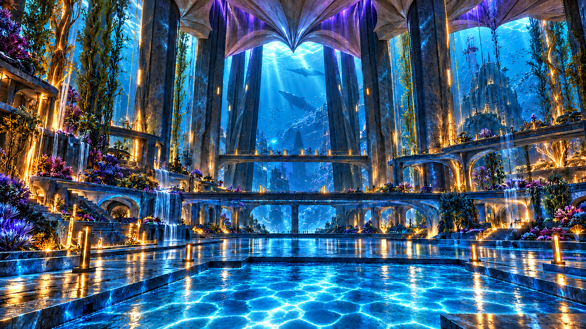

REACTORMTV
A little music-video
station you can direct.

Water leads. Architecture answers.
This image is a reference. A new video has not been generated.
About this recorded example ↗
What's next?
Start with an image
PNG, JPG or WebP · stays on your device · up to 10 MB
A starting point for your new scene. Instrumental by default.
One clear gesture is a good place to start.
Your MUSIC direction overrides the genre menu.
FREE PLAYGROUND · NO GENERATION SPEND
See the exact prompt ＋
Add a new line beginning MUSIC: in your direction to override the genre.
⌁ Inside the station / diagnostics & rehearsal1 EVENT
Rehearse the connection
These are synthetic states and a test pattern, with an optional quiet tone. They never contact Reactor.
Try a local recording
Play a recorded example, then record its picture and sound. Save the take before closing this page.
Prompt text, image filenames, keys, tokens and URLs are excluded. Creative recipes are exported separately.